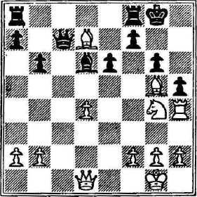

Partida Núm. 8
Sistema de Colle
Blancas: Przepiorka
Negras: Prokes
Budapest (1929), Budapest HUN, rd 12, Sep-15
1. d4
{Una de las razones que explican la popularidad de las aperturas
de peón de dama es que desde la primera jugada presentan
problemas al defensor. No hay método alguno por el que las
negras puedan apoderarse de la iniciativa o siquiera igualar rápidamente.}
1... Nf6
{Pone en juego una pieza donde influye sobre el centro. La jugada
del caballo evita que las blancas continúen con 2. e4.
Un maestro del ajedrez mueve su caballo a f6 tan instintivamente como si respirara.}
2. Nf3
{El caballo se desarrolla hacia el centro, donde tiene la mayor libertad
de acción con el mayor alcance para sus actividades.
El caballo tiene la peculiar propiedad de poder atacar a cualquiera otra pieza
(excepto a otro caballo) sin estar, a su vez, sometido a ataque. Este atributo lo
convierte en una pieza estupenda para maniobrar con ella en el tablero.}
2... e6
{Las negras pueden evitar el ataque general del sistema de
Colle jugando 2.... d5, listas para responder a 3. e3 con 3. ... Bf5.
Entonces, si 4. Bd3, Bxd3 cambia los alfiles y las negras
se libran de la pieza más peligrosa de las blancas (en esta forma
de la apertura).
Con la jugada del texto, las negras dan libertad a su alfil del
rey y no se comprometen con ninguna línea específica de defensa.}
3. e3
{Indicando su designio: evidentemente, las blancas preparan la
típica formación de Colle con el alfil en d3 y el caballo de dama
en d2 para controlar la casilla clave e4, que sirve de trampolín
a las piezas en este ataque.}
3... d5 4. Bd3
{Las blancas comienzan a concentrar la presión en e4, esencial
en el sistema de Colle. Hablando en términos generales, es un buen
plan movilizar las piezas primero en el flanco del rey, lo que hace
posible el pronto enroque en ese lado.}
4... c5
{Esta jugada es casi indispensable en las aperturas de peón de
dama. Es muy importante no jugar primero ... Nc6, pues no
hay que obstruir al peón del alfil.
La jugada de las negras ataca al centro y establece un estado
de tensión en esa zona.}
5. c3
{Fortalece al peón de dama. En el caso de 5... cxd4, las blancas
pueden recapturar con el peón del alfil y mantener un peón en
el centro. Es necesario no tocar al peón del rey, que debe permanecer
en e3 esperando nuevas instrucciones.
Podría parecer que la última jugada de las blancas priva al
caballo de dama de su mejor casilla, pero en esta forma de ataque
el caballo debe estar en d2.}
5... Nbd7
{Probablemente es superior a colocar el caballo en c6. En d7,
los caballos están en contacto entre sí, de manera que si hay cambio
del caballo del rey, el otro puede llegar a f6, casilla ideal
para el ataque o la defensa. En d7, el caballo se mantiene alejado
de la columna del alfil. Cuanto más abierta esté dicha columna,
más útil será para la dama o la torre que la ocupen. Por último,
si las blancas juegan 6. dxc5, el caballo recaptura y entra enérgicamente
en el juego.
En las partidas de peón de dama, el caballo negro de dama suele
desempeñar un mejor papel en d7 que en c6.}
6. Nbd2
{Intensificando la presión sobre e4. Para el profano, el desarrollo
de las blancas parece deficiente. Las piezas parecen estorbarse
mutuamente, pero, como se verá, pueden entrar en acción sin tropiezo
y fácilmente.}
6... Bd6
{Esta jugada es más enérgica que 6.... e7, en que el alfil se limita
a una misión defensiva.}
7. O-O
{Las blancas buscan la seguridad de su rey antes de iniciar cualquier
acción decisiva. Es peligroso abrir la posición y dejar al rey
en el centro, expuesto a un posible contraataque.
El enroque de las blancas es agresivo, pues la torre del rey desempeña
un papel muy importante en el ataque que se prepara.}
7... O-O
{El enroque de las negras es una medida defensiva. Pero, ¿por qué
dar a conocer el domicilio del rey cuando las negras han revelado
que preparan un asalto en el flanco del rey? Sería mejor estrategia
mantener al adversario en la oscuridad, posponer el enroque
por un tiempo y continuar desarrollando las piezas (lo que no
puede causar daño). Las negras podrían llevar su dama a c7 con
el propósito de jugar pronto ...e5 y luego flanquear su alfil de
dama (... b6, seguido por ... Bb7).}
8. Re1
{¡Todavía mayor presión sobre e4! La torre se apodera de la
columna del rey, la cual está cerrada, pero se abrirá después de
que las blancas jueguen e5 y se cambien los peones.}
8... Qc7
{Ubicación ideal para la dama. Desde c7, hace presión sobre el
centro, especialmente sobre e5, y ejerce gran presión sobre la columna
del alfil de dama.
}
9. e4!
{¡La jugada clave del sistema de Colle! Con ella, las blancas pretenden
abrir la posición y desatar la energía concentrada de sus piezas en
un ataque avasallador.
La amenaza inmediata es 10. e5, que representa un ataque
sencillo y brutal sobre dos piezas.}
9... cxd4
{Como compensación por estar a la defensiva, las negras controlan
la columna abierta del alfil... temporalmente.}
10. cxd4
{Mejor que tomar con el caballo, que permite a las negras colocar
piezas en sus casillas e5 y c5.
Mientras tanto, las blancas renuevan la amenaza de ganar una
pieza mediante 11. e5.}
10... dxe4
{Elimina la amenaza y deja a las blancas con un peón aislado de
dama. Dicho peón es especialmente vulnerable al ataque, pues no
puede ser protegido por otro peón, de los cuales el más próximo
se encuentra a dos columnas de distancia.}
11. Nxe4
{De ninguna manera 11. Bxe4, pues 11. ... Nxe4 sería la respuesta,
y las blancas pierden los servicios de su valioso alfil del rey.
"De la misma manera que Rousseau no podía pasársela sin
su gato, tampoco puedo yo jugar ajedrez sin mi alfil del rey", dice
Tarrasch. "Cuando falta, la partida es inanimada y fría. Falta el
factor vitalizador, y no puedo idear ningún plan de ataque".}
11... b6
{Con la intención de movilizar su alfil de dama. Un poco más
oportuna hubiera sido la jugada 11. ... Bf4 para restringir a uno
de los amenazadores alfiles de las blancas.}
12. Bg5
{El alfil ataca y abandona la casilla c1. La torre de dama la
ocupará, ahuyentará a la dama y asumirá el control de la bella
columna abierta.}
12... Nxe4
{Aparentemente, las negras temieron continuar 12. ... Bb7,
pues la continuación 13. Nxf6+ Nxf6 14. Bxf6 gxf6 desorganiza
su posición de peones en el flanco del rey.}
13. Rxe4!
{Superior a la jugada natural 13. Bxe4, en que las negras podrían
responder 13. ... Bb7, obligando a 14. Bd3 (para evitar el
cambio de alfiles). Entonces podrían jugar 14. ... Bxf3 15. Qxf3
Bxh2+, conformándose con ganar un peón a cambio de sus penas.}
13... Bb7
{Casi no hay nada mejor que esto, que ofrece al alfil una gran
diagonal. Si, por ejemplo, 13. ...Nf6 14. Rh4 resulta de difícil
contestación. La amenaza de ganar un peón mediante 15. Bxf6
gxf6 16. Bxh7+ no podría evitarse con 14... h6, porque
15. Bxf6 gxf6 16. Rxh7 gana de todas maneras el peón.
}
14. Rc1!
{¡Una magnífica jugada! La torre se desarrolla eficazmente en
la columna abierta, mientras la dama tiene que recluirse en
la primera fila. Allí estorba a la torre de dama, impidiendo su
desarrollo por largo tiempo . . . ¡para siempre, según veremos!}
14... Qb8
{No hay otra cosa: la continuación 14. ... Bxe4 15. Rxc7 Bxf3
16. Qxf3 Bxc7 17. Qc6 gana una pieza para las blancas.}
15. Rh4!
{¡Lo que se perseguía! La amenaza de las blancas 16. Bxh7+ hace
que uno de los peones que se encuentran frente al rey se mueva
hacia adelante. Las blancas tienen una ventaja, cualquiera que sea
el peón que avance, y es:
Toda jugada de los peones debilita la estructura defensiva.
Toda casilla que no esté defendida (como consecuencia de dicho
avance) crea una debilidad en la posición.}
15... g6
{Si las negras intentan defender al peón de torre con 15. ... Nf6
16. Bxf6 gxf6 17. Bxh7+ gana al peón de todas maneras. O si las
negras adelantan el peón de torre 15. ...h6, entonces 16. Bxh6 gxh6 17. Rxh6
es una combinación evidente de sacrificio que deshace el cordón
de peones y expone al rey a un ataque mortal.
Las blancas han conseguido lo que se proponían. Han hecho que
avance el peón del caballo de rey. Pero, ¿cómo explotan la debilidad
resultante? ¿Hay algún ataque contra el peón? Aparentemente
no lo hay, pues para atacarlo con el peón de torre deben mover
la torre y luego jugar h4 y h5, proceso que requiere tiempo
y obtiene poco.
¿Qué otra línea queda? ¿Sacrificar una pieza por el peón de caballo?
Evidentemente es inútil, pues las blancas no podrían romper
así la posición.
Pero el peón avanzó y hay una debilidad en alguna parte.
Sabemos que esto es cierto, y en ello debe estar la clave de
la combinación victoriosa.
El adelanto del peón debilitó las casillas h6 y f6, que ya no
están defendidas por un peón. Esto significa que las blancas deberán
procurar apoderarse del control de estas casillas, ya sea
ocupándolas con sus piezas o usándolas como medio para penetrar
en el campo enemigo.
Pero, ¡un momento! ¿No defiende todavía el caballo negro su casilla f6?
Así es, y el saberlo nos da la información que necesitábamos. El caballo es
el guardián de las casillas negras, ¡y hay que destruirlo!
}
16. Bb5! Qe8
{No hay otra manera de proteger al caballo.
Si 16... Bc8 17. Bc6 gana la calidad.
Si 16... Bxf3 17. Qxf3 Qe8 18. Qc6 gana una pieza.
Después de la jugada del texto, el caballo queda clavado y se convierte
en un magnífico blanco para nuevos ataques.}
17. Ne5 Bc8
{No es mejor 17. ... Bxe5 18. dxe5 (descubriendo el ataque de
la dama sobre el caballo), Bc8 (o ... Bd5) 19. Rc7 y la miserable
criatura tiene que perecer.}
18. Rxc8!
{¡Quitando todo apoyo al caballo! La técnica es sencilla: si no
es posible agravar la presión sobre una pieza, véase si se puede
eliminar a uno de sus defensores.}
18... Qxc8
{De ninguna manera 18. ...Rxc8, en que 19. Bxd7 gana dos
piezas por una torre y luego arrincona a la dama.}
19. Bxd7
{Las blancas tienen dos piezas por la torre, ¡y el ataque!}
19... Qc7
{No, 19. ... Qb7 o 19. ... Qb8, pues 20. Bc6 gana la calidad.
La alternativa era 19. ... Qa6, pero las negras esperan tener
algún contra juego en la columna del alfil.}
20. Ng4!
{El primer paso para explotar las casillas negras débiles trae
consigo una amenaza de mate con 21. Nf6+ Kh8 (o 21... Kg7) 22. Rxh7#.}
20... h5
{El rey necesita mucho espacio. El intento liberador con 20. ...
f5 fracasa porque 21. Bxe6+ Kh8 (21. ... Kg7 22. Bh6+ gana
calidad) 22. Nf6, y la resistencia es inútil.}
21. Nf6+ Kg7
{Si 21. ... Kh8 22. Rxh7+ lleva al mate.}
22. Nxh5+
{Sacrificando al caballo para acabar con los peones que protegen al rey.}

22... gxh5
{Las negras deben tomar al caballo, porque después de
22. ... Kg7 (o h7) 23. Nf6+, Kg7 24. Rh7 es mate.}
23. Qxh5
{Las blancas amenazan dos mates en la columna de torre.}
23... Rh8 24. Bh6+
{Las negras abandonan, pues hay mate en 2.}
1-0